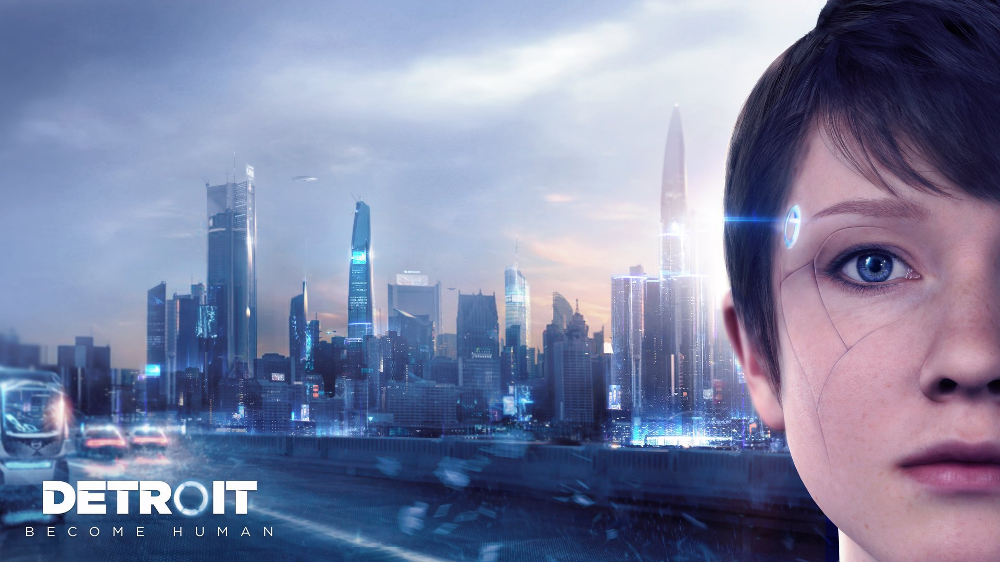
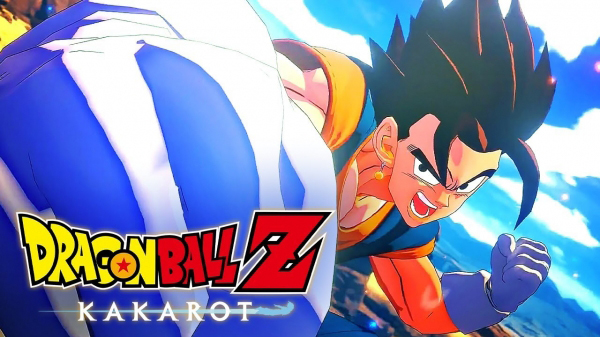
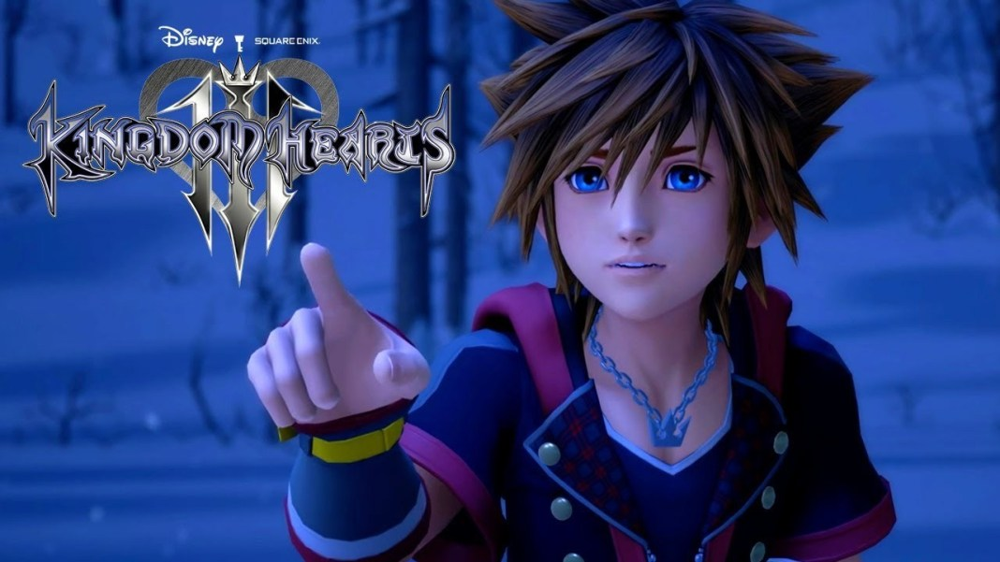
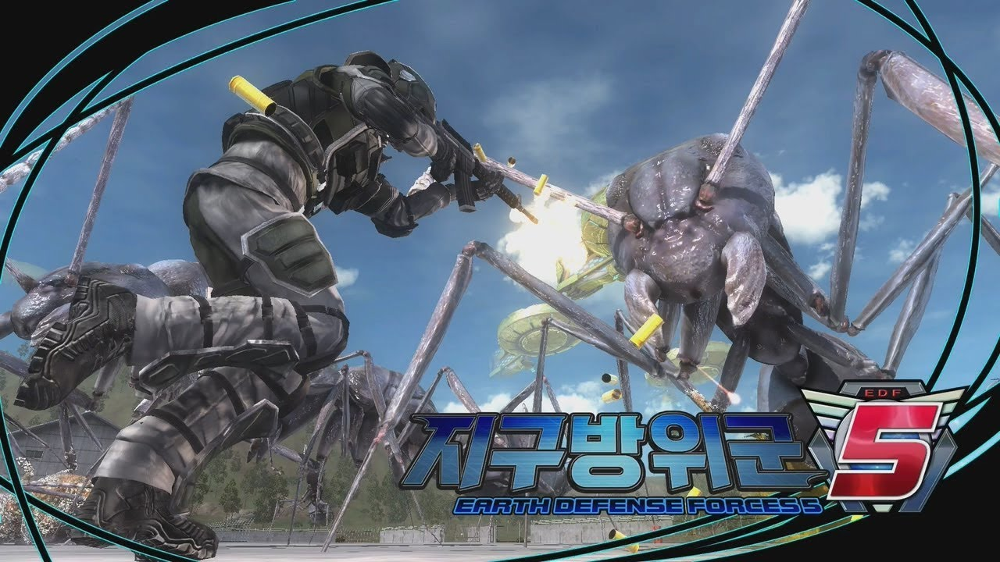
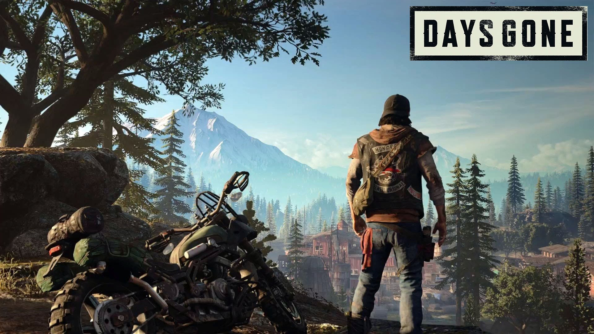

4K 게이밍 ® 그 이상
PS4 Pro의 강력한 성능
4K 게이밍 PS4 Pro는 4K TV와 연결해 게임을 플레이할 수 있습니다.4K TV에서 PS4 Pro를 연결해 플레이할 때 가장 선명하고 디테일하게 보이도록 최적화되어 있습니다.
더 강력한 HD 파워 부스트 모드를 이용해 PS4 Pro의 향상된 성능으로 PS4 게임을 플레이하세요. HD TV 향상 게임에서는 선명한 이미지와 더 빠른 프레임 속도로 즐길 수 있습니다.
HDR 기술 HDR을 지원하는 TV에서 플레이를 하면, PS4 게임의 환상적이고 생동감 넘치는 컬러를 확인할 수 있습니다.
4K 엔터테인먼트 4K 영상, 영화, 콘텐츠를 PS4 Pro에서 스트리밍하세요.
PS4 PRO에서 가장 인기 있는 대작을 플레이하세요
PS4 Pro 성능 향상 게임




